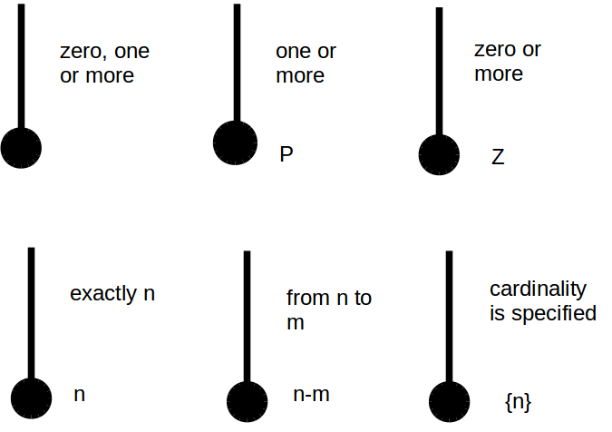

The following notes are largely based on Steirn (1999).
The representation of a system needs contextual metadata clarifying the date and/or version it describes.
AKA decision flow charts, logic flow charts, and logical decision flow charts. Flow charts model decisions, a type of process. Languages that model processes more generally can also represent decisions.
The basic elements of flow charts are available in MS Visio's language level diagrams stencil:
AKA Chapin charts, structograms, structured flowcharts. Per Nassi and Shneiderman (1973), "We propose a flowchart language whose control structure is closer to that of language amenable to structured programming:"
Per Dybka (2014), there are many ERD notation styles:
This is a notation that describes the optionality/modality/participation and cardinality/multiplicity of a relationship, so it can be used within other modeling systems. Crows-foot notation annotates relationships with the symbols:

Per Stiern (1999), Martin notation adds a few more details to crows-foot notation.




Ambler, S. (n.d.). Agile models distilled: Potential artifacts for agile modeling. Retrieved from http://www.agilemodeling.com/artifacts/
Ambler, S. (n.d.). UML 2 activity diagrams: An Agile introduction. Retrieved from http://www.agilemodeling.com/artifacts/activityDiagram.htm
Dybka, P. (2014). ERD notations in data modeling. Vertabelo Academy. Retrieved from http://www.vertabelo.com/blog/technical-articles/comparison-of-erd-notations
Nassi, I., & Shneiderman, B. (1973). Flowchart techniques for structured programming. SIGPLAN Not., 8 (8), 12–26. Retrieved from https://www.cs.umd.edu/hcil/members/bshneiderman/nsd/1973.pdf
Stiern, K. (1999). Comparison of diagramming methods. Retrieved from http://www.umsl.edu/~sauterv/analysis/dfd/DiagrammingMethods.html